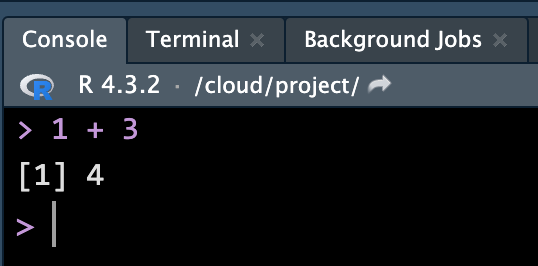

Basic R/Python
MATH/COSC 3570 Introduction to Data Science
Arithmetic and Logical Operators
Arithmetic and Logical Operators
Math Functions

Math functions in R are built-in.


Variables and Assignment
Use <- to do assignment. Why
Object Types
character, double, integer and logical.


- Variable defined previously is a scalar value, or in fact a (atomic) vector of length one.
List (Generic Vectors)
Lists are different from (atomic) vectors: Elements can be of any type, including lists.
Construct a list by using
list().

If list
xis a train carrying objects, thenx[[5]]is the object in car 5;x[4:6]is a train of cars 4-6.— @RLangTip, https://twitter.com/RLangTip/status/268375867468681216


Python Data Structures for Data Science
Python built-in data structures are not specifically for data science.
To use more data science friendly functions and structures, such as array or data frame, Python relies on packages
NumPyandpandas.


Central Tendency: Mean and Median
Variation

R plot()
mpg cyl disp hp
Mazda RX4 21.0 6 160 110
Mazda RX4 Wag 21.0 6 160 110
Datsun 710 22.8 4 108 93
Hornet 4 Drive 21.4 6 258 110
Hornet Sportabout 18.7 8 360 175
Valiant 18.1 6 225 105
Duster 360 14.3 8 360 245
Merc 240D 24.4 4 147 62
Merc 230 22.8 4 141 95
Merc 280 19.2 6 168 123
Merc 280C 17.8 6 168 123
Merc 450SE 16.4 8 276 180
Merc 450SL 17.3 8 276 180
Merc 450SLC 15.2 8 276 180
Cadillac Fleetwood 10.4 8 472 205
Argument pch

- The defualt is pch = 1
Python matplotlib.pyplot
mpg cyl disp hp
0 21.0 6 160.0 110
1 21.0 6 160.0 110
2 22.8 4 108.0 93
3 21.4 6 258.0 110
4 18.7 8 360.0 175
5 18.1 6 225.0 105
6 14.3 8 360.0 245
7 24.4 4 146.7 62
8 22.8 4 140.8 95
9 19.2 6 167.6 123
10 17.8 6 167.6 123
11 16.4 8 275.8 180
12 17.3 8 275.8 180
13 15.2 8 275.8 180
14 10.4 8 472.0 205
R Subplots

R boxplot()

Python boxplot()

R hist()
-
hist()decides the class intervals/with based onbreaks. If not provided, R chooses one.

Python hist()

R barplot()

Python barplot()

R pie()
3 4 5
46.9 37.5 15.6 [1] "3 gears: 46.88%" "4 gears: 37.5%" "5 gears: 15.62%"
Python pie()

R 2D Imaging: image()
- The
image()function displays the values in a matrix using color.

In Python,
R fields::image.plot()

R 2D Imaging Example: Volcano

R 3D scatter plot: scatterplot3d()

In Python,
R Perspective Plot: persp()

In Python,
Resources
We will talk about data visualization in detail soon!